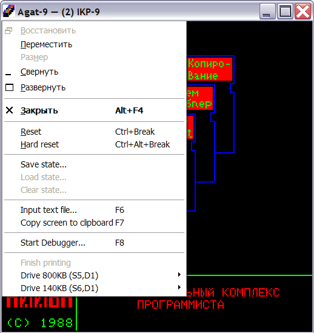

Each running system has a context menu which contains general and configuration-specific commands.
General commands:
Menu item |
Action |
|---|---|
| Reset | Softly reset current system |
| Hard reset | Hardly reset current system |
| Save state | Save state of current system |
| Load state | Load saved state (if any) of current system |
| Clear state | Clear saved state (if any) of current system |
| Input text file | Redirect keyboard input from specified text file |
| Copy screen to clipboard | Copy current screen to clipboard |
| Start debugger | Open debugger window (if enabled in global settings) |
Configuration - specific commands:
| Menu item | Action |
|---|---|
Printer commands |
|
| Finish printing | Finish current print session |
Disk commands |
|
| Insert disk | "Insert" disk image into selected virtual drive |
| Remove disk | "Remove" disk image from selected virtual drive |
See also: Keyboard shortcuts, Main menu